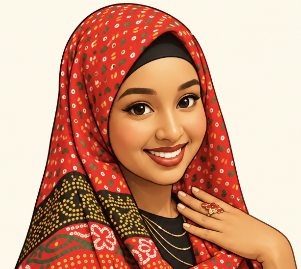

Hello, I’m Sabrina
Curious by nature. Creative by design. Engineer by choice.
Blending design and technology to craft meaningful,
user-centered solutions.

Curious Creator
 Sabrina
SabrinaHello, I’m Sabrina
Blending design and technology to craft meaningful,
user-centered solutions.

Curious Creator